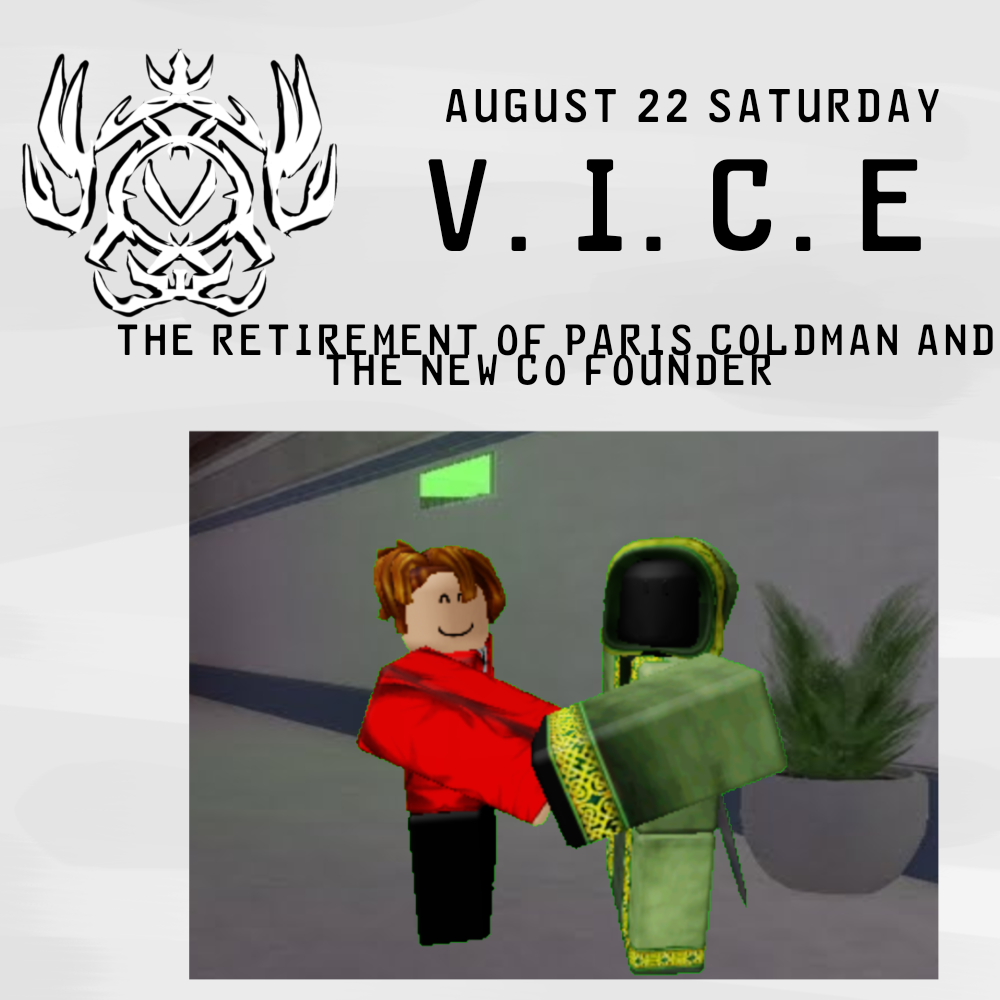

VICE
VICE
APPARENTLY THE FOUNDER OF VICE ENJIN TAKAMI DECIDED TO REMOVE VLACIER FROM THE WHITE ROOM AND EXPERIMENTED VLACIER COLDMAN BRAIN AND BRAINWASH HIM REMOVING ALL CRAZY MEMORIES VLACIER COLDMAN IS OFFICIALLY RETIRING FROM BEING A FOUNDER OF VICE AND DECIDED TO BE A ROBLOXIAN VICE AGENT AFTER HE REST FOR A FEW WEEKS

V.I.C.E was Made to Execute expose and report These Inappropriate Games and Behaviors of The Players. They are Low But Have a strong connection To the Copper Inc and Others. V.I.C.E also Contains Entity's the only different is that V.I.C.E Used entity's as a weapon a Manipulation Ray Gun that manipulates Entity's making them as a weapon. V.I.C.E Is a Low number people Because They haven't recruited yet that's why they have an allies With the others. The Founder was Vlacier But Got replace by Enjin Takami Due to The Vlacier crazy behavior. The Copper Inc Council Replaced vlacier And Was Now Lock into the White rooms. Co founder Is @HH🔥HC❄ Also knowns as Exilera He was known for his great exposing and Getting information about Games that are inappropriate and Players Disgusting behavior. V.I.C.E Has The Ability to expose Games and Report Players But can't kick or ban players.
we gathered all our resources in the copper inc but theres something suspicious in the Forest some copper inc guards were all dead their Lungs and Organs torn apart we saw two Monster foot print one is black and the other is white we tried to follow it and end in a Blank wall.. Written by - Josefa T. Gonzalez

§-/|\!|_£ is a dark red slime virus that can infect the suspect's body Every infection has a stage:
Stage 1: the beginning. [ The suspect Will have dimentia and a disease that can still be cured ]
Stage 2: the point of no return [ The suspect Will have a headache and its vision are getting a bit red. Suspect Will also starting to be a little agressive than usual with no possible cure ]
Stage 3: falling into the abyssal [ The suspect's condition is starting to get even worse. The suspect didn't even know he/she exist. Starting to loose hope easily ]
Stage 4: full control [ When the suspect died, it will turn into a dark red slime virus and will start to spread even more ]
That's why this entity has a suit Made out of metal. So ITS virus Will not spread and Made an apocalypse
 DOCUMENT
DOCUMENT
PARIS COLDMAN is now officially Retiring Being a co founder And started becoming the Council 004 @knight or I should Say Medivial Henry is now officially The new Co founder of the Vice ...
REASONS:
enjin Takami Decided to Replace Paris being a co founder because He was Not always active Lately and Too risky For someone like him Because he's super duper young for this

W.I.Pgive me idea idk what to do